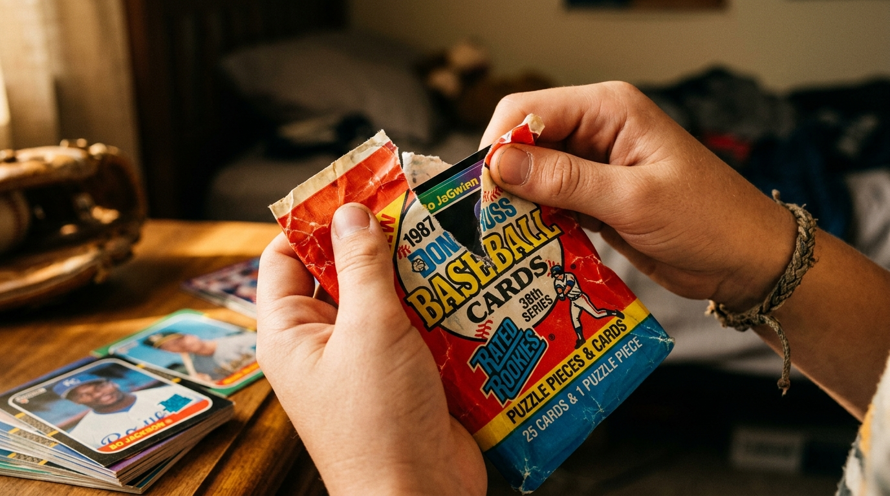
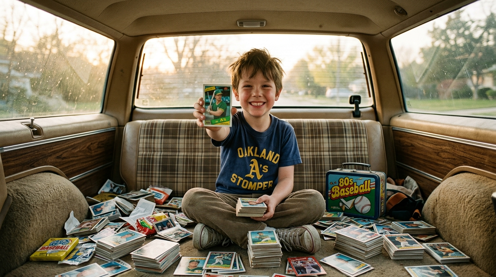
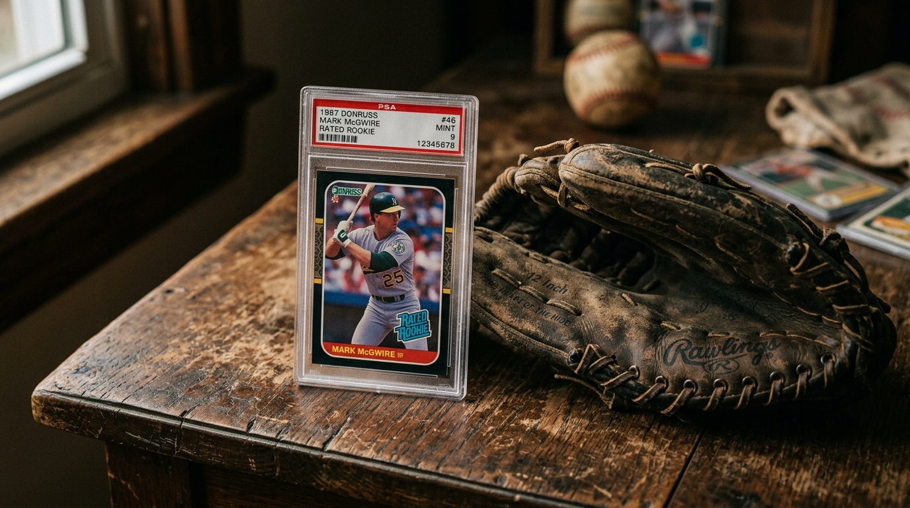

The Summer
of '87,
Encapsulated in Cardboard.
If you were a kid in 1987, there was only one thing that mattered when you tore the wax wrapper off a pack
of Donruss: chasing the blue and white Rated Rookie
logo.
And no Rated Rookie
mattered more than #46.
Before the controversies, before the records, there was just a 23-year-old kid in an Athletics uniform with forearms like tree trunks, violently launching 49 home runs into the bleachers and redefining what power meant in baseball.
Pulling this card out of a pack in the back of your parents' station wagon made you the king of your neighborhood.

For collectors, the 1987 Donruss set is notorious. Those slick, black-and-gold borders were incredibly fragile, prone to chipping the second they saw daylight. Finding a Mark McGwire Rated Rookie in genuine Near Mint condition today is like finding a time machine that actually works.

- Player Mark McGwire (The 49-HR Rookie Campaign)
- Era 1987 (The Golden Age of the "Junk Wax" Era)
- Pedigree Donruss Rated Rookie (#46)
- Condition Near Mint (Immaculate black borders, perfectly preserved)
- Investment $25 (Market Average)
Your mom might have thrown out your original shoebox full of cards, but the memories survive.